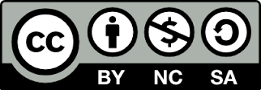

Breve guida su come scrivere una tesi di Laurea
(o un testo scientifico)

Introduzione
Ricerca bibliografica
Conoscere le parole chiave
Il primo passo per cercare della letteratura scientifica è quello di conoscere le parole chiave corrette per l’argomento. Queste possono essere trovate insieme al relatore all’inizio e man mano che si sviluppa una conoscenza dell’argomento diventeranno di più e più ricche.
Partire da review
Quando si comincia a studiare un argomento nuovo è buona norma partire da review.
la ricerca della letteratura andrà fatta più volte durante la scrittura della tesi, anche sulla base di nuove conoscenze, evidenze, che emergeranno nel corso dello studio o discussioni (o lettura di articoli che emergono durante la prima ricerca).
Utilizzo di LLM per ricerca letteratura
Gli LLM (cioè Large Language Models), come ChatGPT o Gemini, possono essere un valido aiuto per la letteratura. La mia raccomandazione è di usarli per cercare articoli ma non per cercare informazioni o solo citazioni. Gli LLM sono particolarmente utili per ampliare il campo di ricerca o scoprire nuove aree di letteratura rilevante, magari molto rilevanti ma lontane dalle parole chiave che utilizzereste per la ricerca di informazioni. Gli LLM possono essere anche usati per individuare i lavori o concetti rilevanti. Al tempo di scrittura di questo paragrafo (10/11/2025), gli LLM possono infatti fornire informazioni inesatte o addirittura completamente inventate anche se verosimili (in termini tecnici queste risposte sbagliate si chiamano «hallucinations»).
L’utilizzo corretto è dunque rivolgere domande anche vaghe agli LLM ma poi includere nella tesi soltanto informazioni verificate negli articoli e non basarsi su informazioni riportate direttamente dal LLM. In nessun caso utilizzate «citazioni» (es. Smith et al., 2022. A handbook on clinical neuropsychology, Springer) perché anche queste possono essere completamente inventate.
Recuperare i files degli articoli
La scrittura della Tesi
Prima di cominciare scrivere
Prima di cominciare a scrivere la tesi è fondamentale avere in mente uno schema generale di quello che si intende scrivere. Cominciando a scrivere senza nessun tipo di traccia si rischia che quello che lo scritto risulti troppo un «flusso di pensiero», difficile da seguire. Un modo utile per procedere è quello di partire con uno schema generale, anche molto vago, e man mano andare nel dettaglio di questo schema.
Immaginiamo un’ipotetica tesi su una tesi sperimentale che confronti fMRI e MEG per il mappaggio prechirurgico di aree funzionali. Un ipotetico schema dell’introduzione della tesi potrebbe essere questo.
- Introduzione su necessità mappaggio e su principali tecniche.
- L’fMRI nel mappaggio prechirurgico.
- La MEG nel mappaggio prechirurgico.
- Studi su confronti diretti tra MEG ed fMRI nel mappaggio prechirurgico.
- Motivazioni e obiettivi dello studio corrente.
Questo prima schema, per quanto generale, aiuta ad avere un’idea di massima su che struttura avrà quello che scrivi e permette di essere sicuri di inserire tutti gli argomenti, mantenendo un certo filo logico. Finita questa parte si può comunque ulteriormente nel dettaglio nello schematizzare. Ad esempio: Avere schemi di questo tipo è utile sia per tenere traccia del filo logico, sia per assicurarsi che siano trattati tutti gli argomenti di interesse.
- Introduzione su necessità mappaggio e su principali tecniche.
- L’fMRI nel mappaggio prechirurgico.
- panoramica degli studi.
- vantaggi dell’fMRI.
- svantaggi dell’fMRI.
- La MEG nel mappaggio prechirurgico.
- panoramica degli studi.
- vantaggi della MEG.
- svantaggi della MEG.
- Studi su confronti diretti tra MEG ed fMRI.
- studi che trovano vantaggio fMRI.
- studi che trovano vantaggio MEG.
- Motivazioni e obiettivi dello studio corrente.
- …
Un aspetto importante che si può già cominciare a vedere è il mantenimento di una coerenza interna. Se parlo sempre di fMRI e poi di MEG, la stessa struttura o lo stesso ordine viene replicato per tutto il testo.
Non aspettare troppo prima di cominciare a scrivere
Anche se avere una struttura aiuta, un errore comunissimo nello scrivere è quello di aspettare di essere pienamente convinti prima di scrivere. Questo è la causa principale del «blocco dello scrittore». Se una prima frase non ci convince del tutto di primo acchito, aspettiamo a scriverla. Assolutamente sbagliato. Sempre meglio scrivere di getto, senza preoccuparsi che tutto sia perfetto subito. La strategia vincente è scrivere senza porsi troppi problemi e piuttosto ricontrollare tante volte. Sarà comunque necessario ricontrollare una o più volte.
Scrivere, Ricontrollare, Riscrivere, Ricontrollare, …
Un errore molto comune (specie nella scrittura di una tesi di laurea) è quello di non ricontrollare adeguatamente il testo scritto. Una strategia usata spesso è quella di prestare molta attenzione nella prima scrittura per evitare di ricontrollare in seguito, per risparmiare tempo. Questo è un errore, perché è pressoché impossibile evitare di commettere errori nella scrittura. Se non ricontrolli il testo l’unico effetto che otterrai sarà quello di causare irritazione nella persona che leggerà la tesi per correggerla, che avrà l’impressione di un lavoro fatto superficialmente. Ricontrollare (più di una volta) è inevitabile. La strategia più adatta per scrivere un testo scientifico è scrivere, anche di getto, e piuttosto ricontrollare varie volte. Solo rileggendo ci si può accorgere di frasi lasciate a metà, di fili logici o argomentazioni poco convincenti, o di errori di battitura. Quando hai finito un paragrafo, un capitolo o comunque una sezione consistente, è utile cercare di analizzare la struttura di quanto scritto. Quale è la struttura del mio testo? Ha un filo logico chiaro? Risulta chiara la connessione tra le varie parti?
Coerenza nel presentare le informazioni
Una cosa che facilita molto il lettore è la coerenza nel testo nel presentare le informazioni. Ad esempio, se parli di pazienti e poi di soggetti di controllo è sempre meglio che tu mantenga questo ordine, nel testo, nelle tabelle, nel presentare i risultati e nelle figure. Questa coerenza rende il testo più semplice da leggere e il lettore può concentrarsi sul contenuto invece che sulla forma.
Semplicità nello stile
A volte nello scrivere una tesi di laurea (scientifica) si pensa che lo stile debba essere adeguato e sufficientemente solenne. Sbagliato. Lo stile per una tesi di laurea deve essere semplice. Purché non sia infantile lo stile deve essere semplice e chiaro. Evitare termini ampollosi e troppo aulici che risulteranno innaturali e creeranno l’effetto opposto di quello desiderato: faranno risultare il testo ridicolo.
Ad esempio non scrivere:
molti sono stati gli studi che hanno investigato la differenza…
meglio il più naturale:
molti studi hanno investigato la differenza …
Stessa ragionamento vale per la scelta dei termini. Se esiste un termine semplice per esprimere qualcosa, non cercare il termine insolito o più aulico. I sinonimi vanno bene per evitare ripetizioni, ma invece di usare acciocché meglio usare al fine di.
Evita i colpi di scena
Nello scrivere una tesi a volte si ha la tendenza di non rivelare il risultato per mantenere viva l’attenzione del lettore. Sbagliato. Molto spesso è meglio anticipare subito il risultato o la conclusione, in modo da guidare il lettore nell’argomentazione. Se il lettore non capisce dove si vuole andare a parare può perdere interesse nella lettura, che può risultare più difficoltosa.
Evita frasi passive, evita nominalizzazioni
Il testo risulta più semplice da leggere se non ci sono frasi passive. Se possibile, cercare di trasformare le frasi in attive, e limitare l’uso delle passive al minimo. Frasi attive sono più semplici e scorrevoli da leggere. Ad esempio, invece di:
i tempi di reazione sono stati influenzati dalla TMS.
è meglio:
la TMS ha influenzato i tempi di reazione.
Un’eccezione è rappresentata nel caso di articoli o tesi scritte da una sola persona: è però più indicato usare l’impersonale. Ad esempio:
I dati sono stati analizzati tramite un’ANOVA.
Se però gli autori sono più di uno:
Abbiamo analizzato i dati tramite un’ANOVA.
Meglio evitare anche le nominalizzazioni, cioè l’utilizzo di un nome invece di un verbo. Per esempio invece di:
la TMS ha determinato un rallentamento nei tempi di reazione.
meglio il più naturale:
la TMS ha rallentato i tempi di reazione.
Ogni tanto, nel testo, fare il punto della situazione
Ogni tanto, specie a fine di un paragrafo, è molto utile fare un «punto della situazione», per riassumere brevemente il contenuto del paragrafo. Questo aiuta il lettore a mettere ordine nelle informazioni che ha letto e lo aiuta a capire come mentalmente può riassumere quanto appena letto. Mettere dei piccoli sunti aiuta anche nella scrittura perché costringe a schematizzare e focalizzarsi sugli aspetti principali, portando ad una maggiore consapevolezza di quanto si ha appena scritto.
Semplifica
Nel testo è sempre meglio cercare di semplificare il più possibile. Nelle fasi di rilettura è sempre bene chiedersi: Potrei semplificare questa frase? Se la risposta è sì, allora procedi senza esitazione a semplificare. Non spaventarti a togliere parole. Se una parola non aggiunge niente di informativo al testo, allora è meglio toglierla, renderà solo più difficoltosa la lettura.